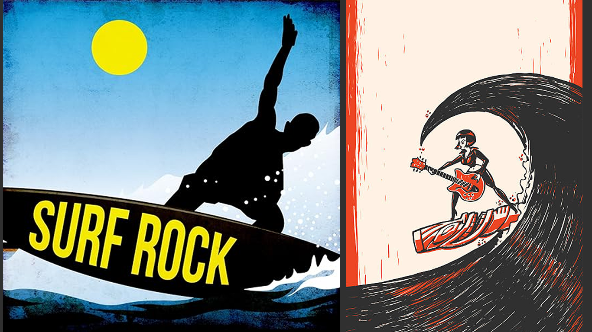

SURF ROCK
El surf rock, es un género musical nacido en las playas del sur de California a comienzos de los años sesenta. Surgió, fomentado principalmente, por un grupo de jóvenes seguidores del rock de los años cincuenta y de sus emblemáticas figuras como Chuck Berry o Elvis Presley. Tenía en sí dos características especiales que lo convirtieron automáticamente en uno de los estilos favoritos de ese momento. Por un lado, el importante papel que jugaban el saxo y las guitarras eléctricas, protagonistas instrumentales absolutos con su singular sonido y, por otro lado, los coros vocales, los que generalmente estaban compuestos por entre tres y cuatro voces.
El surf rock, se convirtió en una de las tendencias musicales más populares durante el inicio de los años sesenta. Dick Dale fue el iniciador de este movimiento musical que tanta gente atrajo.
Dale, utilizo la palabra “surf”, para esta nueva tendencia musical, porque era su deporte favorito y lo practicaba con cierta frecuencia. Influenciado por el estilo de vida del surf y la cultura de la playa.
Los instrumentos más utilizados en este son: guitarra eléctrica, bajos, batería. Entre sus artistas y grupos más destacados se encuentran Dick dale, Jack Johnson, Donavon Frankenreiter, bruce Johnston, Chuck Berry.
